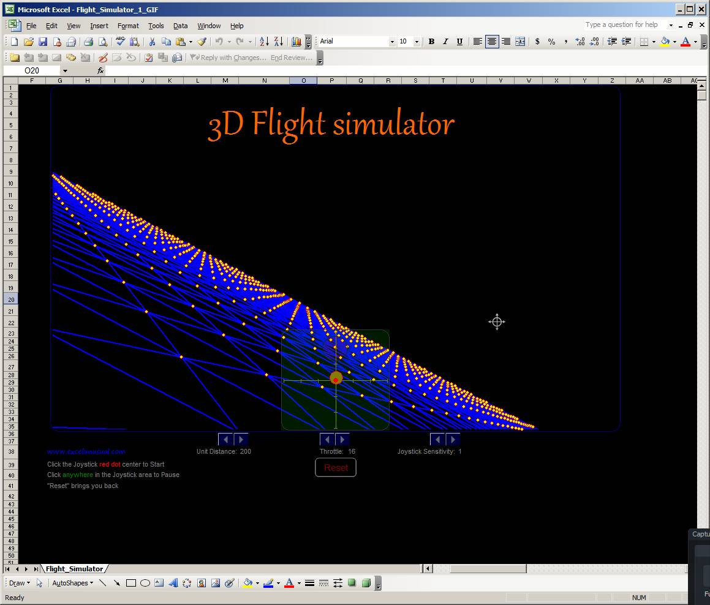
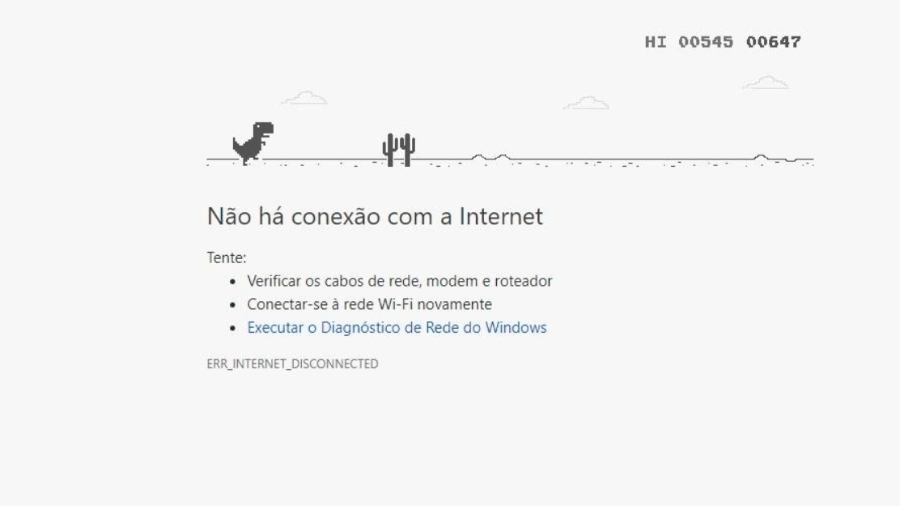
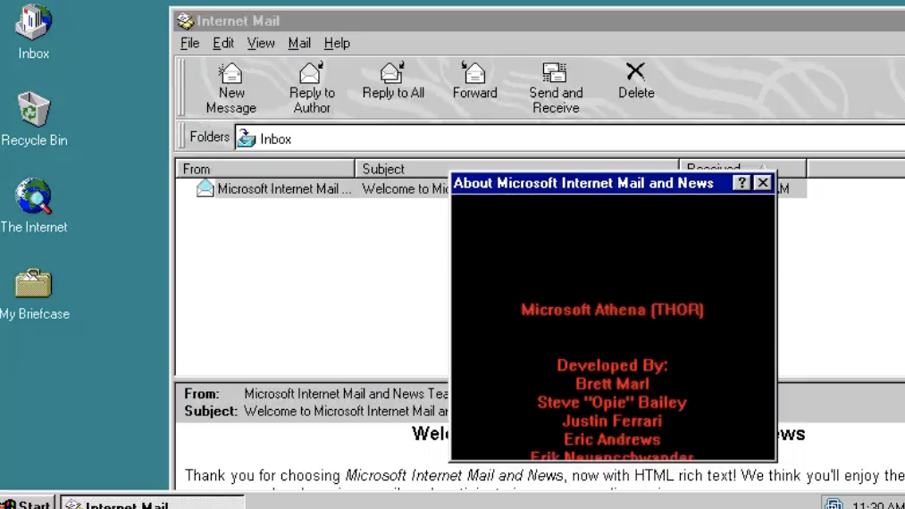
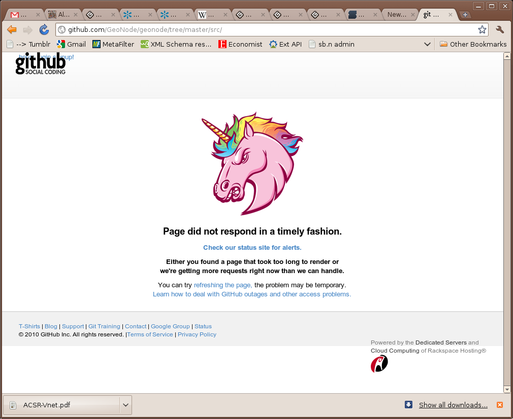
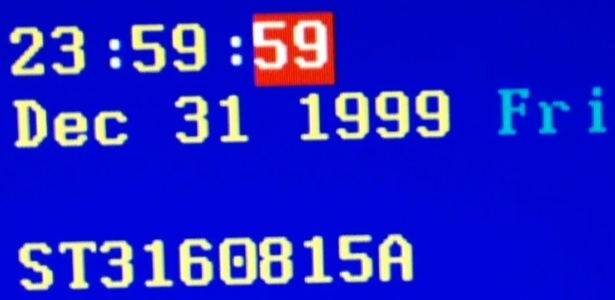
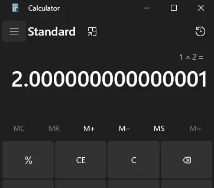
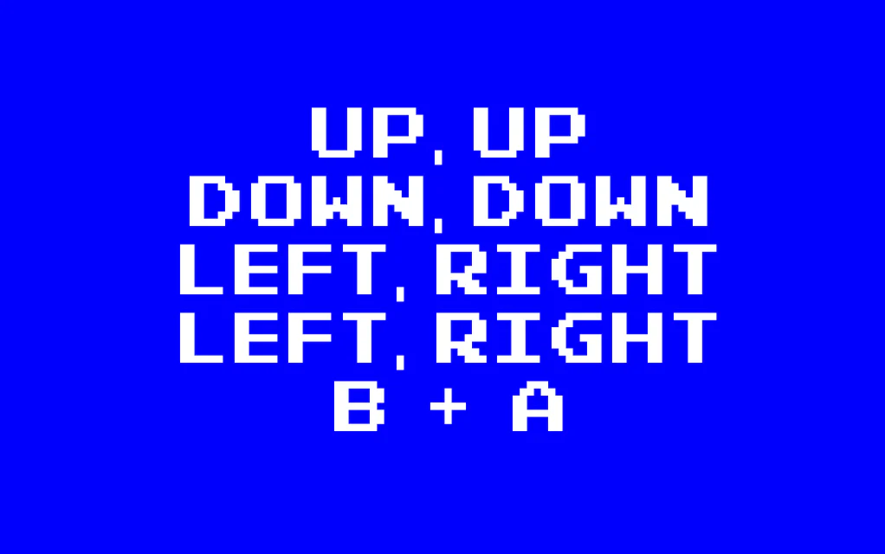

O Excel 97 tinha um simulador de voo escondido

O Microsoft Excel 97 escondia um jogo 3D estilo simulador de voo dentro da planilha.
Como ativava?
Era preciso selecionar células específicas e usar combinações absurdas de teclado.
Fatos obscuros, bugs absurdos e Easter eggs históricos.

O Microsoft Excel 97 escondia um jogo 3D estilo simulador de voo dentro da planilha.
Era preciso selecionar células específicas e usar combinações absurdas de teclado.

Quando você fica sem internet no Chrome, aparece um dinossauro. Se apertar espaço, começa um jogo infinito.

Desenvolvedores colocaram seus nomes escondidos dentro do sistema.

Em versões antigas, existia um modo visual alternativo escondido.
Em 1996, o foguete Ariane 5 explodiu por causa de uma conversão de número de 64 bits para 16 bits.
Custo do erro: aproximadamente 370 milhões de dólares.

Sistemas antigos usavam apenas dois dígitos para o ano. Em 2000, poderiam interpretar "00" como 1900.
O mundo gastou bilhões se preparando... e quase nada aconteceu.

Um erro microscópico na divisão de números em processadores Intel causava resultados errados em cálculos específicos.
Em 2012, um bug em um banco permitiu que clientes sacassem valores inexistentes.

↑ ↑ ↓ ↓ ← → ← → B A
Usado em dezenas de jogos e até em sites modernos.
$ sudo make me a sandwich
Okay.
Alguns sistemas Linux realmente respondem a isso.
CON CON
No Windows antigo, criar uma pasta chamada CON era impossível.
123456
Continua sendo campeã mundial.
| Evento | Nível de Caos | Custo Aproximado |
|---|---|---|
| Ariane 5 | Explosivo | 370 milhões USD |
| Bug do Pentium | Matemático | 475 milhões USD |
| Y2K | Psicológico | Bilhões USD |